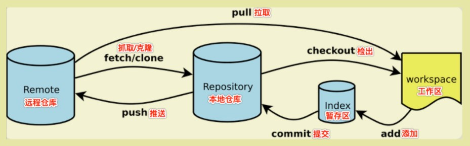

Git
不可或缺的工具！！！
简介
本文旨在记录个人使用过程中遇到的相关 Git 命令，非教程式的，详细学习请参阅 《Pro Git》 的中文文档。
入门篇

安装设置
去 Git 官网 下载对应版本的 Git 安装即可，此处不再赘述。
安装完成后，需要设置当前用户的名字和 Email 地址：
1: git config --global user.name "Your Name" 2: git config --global user.email "email@example.com"
你总是可以通过以下方式获取帮助：
1: git help <verb> 2: git <verb> -h # --help 最常用，如 git config --help 3: man git-<verb>
基本操作
1: git init # 初始化仓库 2: # …… 3: git add . # 添加工作区所有变更到暂存区 4: git commit -m "some commit log." # 提交缓存区内变更到本地仓库
进阶篇
远程仓库
我们就以 站点仓库 为例。
本地仓库和远程仓库之间的传输是通过 SSH 加密的，在使用远程仓库之前，我们需要先创建 SSH Key 。
1: ssh-keygen -t rsa -C "youremail@example.com"
在用户主目录下，会生成 .ssh 目录，包含 id_rsa （私钥）和 id_rsa.pub （公钥）等文件。
……
1: # 列出远程仓库（名称及地址） 2: git remote -v # --verbose 3: 4: # 添加远程仓库 5: git remote add <name> <url> 6: # 移除远程仓库 7: git remote remove <name> 8: # 重命名远程仓库分支 9: git remote rename <old> <new>
关于远程仓库的其他操作，会分散在后续章节中，不在此处单独列出。
分支
1: # 列出分支 2: git branch 3: git branch -l # --list 列出本地分支 4: git branch -a # --all 列出远程、本地分支 5: 6: # 创建分支 7: git checkout -b <branch> 8: 9: # 切换分支 10: git checkout <branch> 11: 12: # 删除分支 13: git branch -d <branch> # --delete 删除合并完全的分支 14: git branch -D <branch> # 强制删除分支（包含未合并完全） 15: 16: # 重命名分支 17: git branch -m <branch> # --move 18: 19: # 合并分支 20: git merge <other-branch> <current-branch>
我们从一个远程仓库拉取分支，默认会在本地创建 master 分支，并关联到远程仓库的主分支。
1: # 拉取远程仓库并关联到自定义本地分支 2: git clone -b <local-branch> <remote-repo-url> 3: 4: # 摘取远程仓库指定分支并关联自定义本地分支 5: git remote add origin <remote-repo-url> 6: git fetch origin <remote-branch> 7: git checkout -b <local-branch> origin/<remote-branch> # ！关键 8: git pull origin <remote-branch>
强制推送本地分支到远程仓库分支（两者分支名称不同时），如下：
1: # git remote add origin https://github.com/loveminimal/loveminimal.github.io.git 2: # git push -f origin master:main # 本地分支 master ，远程分支 main 3: git push -f origin master # 本地分支与远程分支名称相同，皆为 master
!!永远不要试图一蹴而就，在使用的过程中慢慢补充完善即可！